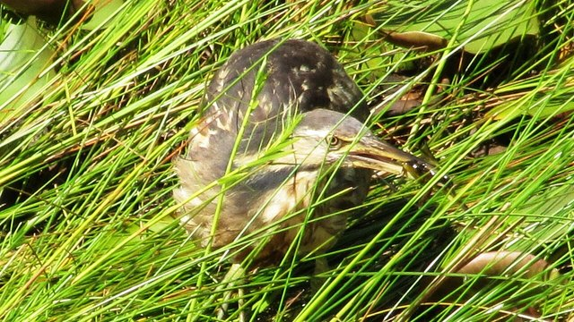

物理5–11 岁约 10 分钟
脖子先缩再打才打得到鱼，脖子一直伸着就鱼跑了？
同一只纸苍鹭。脖子先缩再打才打得到鱼；脖子一直伸着就鱼跑了。苍鹭站在浅水里等鱼，脖子先折回来弯成 S 形，再一下子弹出去，快得鱼来不及跑；脖子一直伸着，出手没了这一弹，鱼一扭就溜了。本页不追真的，观察后洗手。
同一只纸苍鹭，缩打一回，脖子一直伸着一回


脖子先缩再打才打得到鱼。脖子一直伸着就鱼跑了。先点「缩打」，再点「试一试」。
先猜一猜，再试
第 1 题：调到 80，脖子先缩再打，打得到鱼吗？
押一个。把滑条调到 80，再点试一试。
第 2 题：调到 10，脖子一直伸着，还打得到鱼吗？
押好后滑条 10，再试一试。
第 3 题：调到 50，刚好一半，算打得到鱼了吗？
押好后滑条 50，再试一试。
同一只纸苍鹭：脖子先缩再打才打得到鱼；脖子一直伸着就鱼跑了
先点「缩打」再点「试一试」，看打得到鱼。再点「直伸」试一次，看是不是鱼跑了。
纸苍鹭始终是同一只。要紧的是脖子缩不缩：先把脖子折回来弯成 S，力气攒在弯里，鱼一靠近再猛地弹出去，鱼来不及跑；脖子一直伸着，出手慢了这一拍，鱼就跑了。苇鳽把身子藏进芦苇是另一套——另开，不比。
舞台上的读数是本页比较尺子：滑条 ≥ 80 才算打得到鱼。刚好 50 还不够。不追真的，观察后洗手。本页用纸板。
缩颈图鉴
点一张，对照舞台：谁让脖子先缩再打才打得到鱼，谁让脖子一直伸着就鱼跑了。
点一张图鉴，对照为什么脖子先缩再打才打得到鱼。
猜一猜
同一只纸苍鹭要打得到鱼，靠的是缩打，还是脖子一直伸着？
先押一个，再点「看答案」。
任务：缩打和脖子一直伸着都试
先把滑条调到 80 或更高试一次，再调到 20 或更低试一次。两头都点过「试一试」即可完成。
开放式提示不会代替上面的正式任务。
尚未完成：先缩打试一次，或脖子一直伸着试一次。
同一只纸苍鹭，先缩打试一次，再对照试一次
舞台上只改一件事：脖子先缩再打有多够。同一只纸苍鹭，先缩打试一次，看打不打得到；再一直伸着试一次，看是不是鱼跑了。这样比，才知道打到鱼靠的是缩在弯里的那一弹，不是「伸着也一样」，也不是「换成苇鳽藏芦苇」。
回家只带两句：「脖子先缩再打才打得到鱼」；「脖子一直伸着就鱼跑了」。不要写成「脖子越长越会打」。
脖子折成 S 再弹出去，快得鱼来不及跑。
脖子一直伸着，出手慢半拍，鱼就跑了。
苇鳽藏进芦苇另开；本页比脖子缩不缩，两句不要并成一句。
不追真的，本页用纸板对照。
这在教什么：孩子要能对缩打和脖子一直伸着各报成不成，并否定「苇鳽藏芦苇」和「换一套就一样」。
- 缩打那一次，打得到鱼了吗？
- 脖子一直伸着，台上还打得到鱼吗？
- 本页要比苇鳽藏芦苇吗？
- 能去追真的苍鹭吗？
进去靠脖子先缩再打，不是苇鳽藏芦苇，更不要去追真的
苍鹭长腿站在浅水里，先站着等。脖子折回来弯成 S 形，力气攒在弯里，鱼一游近就猛地弹出去，快得鱼来不及跑；脖子一直伸着，出手没了这一弹，鱼一扭就溜走。
不要把它讲成「脖子越长越会打」或「换成别的鸟就能成」。苇鳽把身子藏进芦苇、白鹭是另一页的账；苍鹭先比脖子缩没缩成 S。
不追真的。看完按二十秒洗手。本页用纸板。
给家长的问题
- 缩打那一次，孩子指的是这一招，还是在说「它比较猛」？让他再指一次做对的那一下。
- 脖子一直伸着，为什么鱼跑了？哪一句四岁听得懂？
- 如果他说「苇鳽藏芦苇就能进」——苇鳽藏芦苇是哪一笔账？本页少的是缩打还是苇鳽藏芦苇？
- 苇鳽藏芦苇和苍鹭缩颈，差在「点一下」还是「脖子先缩再打」？
- 不追真的、看完洗手：红线怎么说？本页能当乱追真动物的课吗？
背后的原理
舞台上不写这些词，留给孩子用眼睛看。苍鹭（Ardea）先把脖子收成 S 形再弹出，才打得到鱼。一直伸着鱼会跑。不是苇鳽那种藏。本页用缩打 ≥ 80 当门槛，≤ 20 算脖子一直伸着。刚好 50 不算。
这不是苇鳽藏芦苇说明书，也不是一直伸着的鹭。苇鳽藏芦苇另开，都不要并进本页第一完成句。
人去追活苍鹭会让它受惊。观察后洗手。舞台用纸板。
接下来可以去
带走句：脖子先缩再打才打得到鱼；脖子一直伸着就鱼跑了。苍鹭观察站看真缩打。